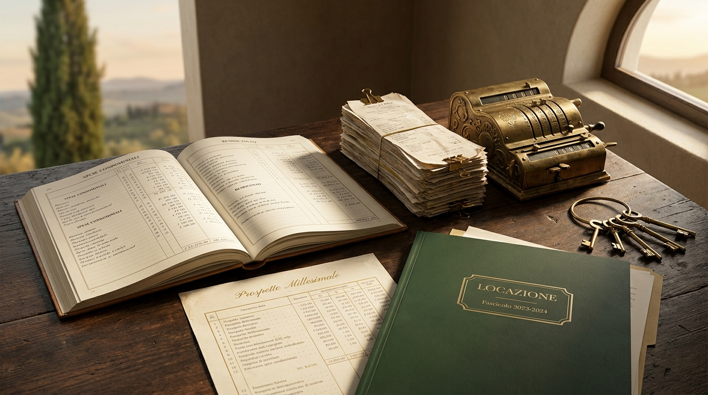

Spese condominiali nelle locazioni: senza rendiconto il proprietario rischia di perdere
Una pronuncia di merito torna su un punto pratico ricorrente: il locatore che pretende dall'inquilino il rimborso delle spese condominiali deve provarle con i rendiconti approvati dall'assemblea. La pretesa fondata su un importo forfettario imposto in giudizio, priva di base documentale, viene respinta. Il vero nodo è l'onere della prova.

Il caso
Il tema è classico nelle controversie tra proprietario e conduttore: il locatore chiede il rimborso degli oneri condominiali, ma in giudizio non deposita i documenti contabili. Una recente pronuncia di merito (riferibile a una decisione del Tribunale di Roma, sezione civile) ha respinto la richiesta del proprietario che reclamava un importo forfettario non sostenuto da rendiconti condominiali approvati.
Precisazione doverosa: si tratta di una sentenza di primo grado, dunque di una pronuncia di merito non vincolante per altri giudici. Vale come indicazione applicativa, non come principio consolidato. Chi voglia citarla in un contenzioso dovrebbe verificarne gli estremi esatti nella banca dati di riferimento.
Forfait pattuito e forfait imposto: non sono la stessa cosa
Il titolo "spese a forfait" può ingannare. Occorre distinguere due situazioni diverse.
Il forfait concordato in contratto è lecito: le parti possono pattuire un importo fisso a copertura degli oneri accessori, e in quel caso il proprietario non deve rendere conto delle singole voci.
Diverso è il forfait unilaterale azionato in giudizio: il locatore che, in assenza di una clausola, pretende una somma "tonda" senza giustificarla con la contabilità condominiale, non assolve il proprio onere probatorio. È questa la situazione respinta dalla pronuncia in esame.
Inquadramento normativo
Due sono i riferimenti utili.
L'art. 9 della L. 392/1978 disciplina, per le locazioni abitative, il riparto degli oneri accessori tra le parti e riconosce al conduttore il diritto di ottenere l'indicazione specifica delle spese e di accedere ai documenti giustificativi prima di pagare. La norma, però, non prevede testualmente l'obbligo di produrre in causa il rendiconto approvato dall'assemblea.
L'esigenza del rendiconto deriva dalla combinazione di quella disciplina con il principio generale sull'onere della prova (art. 2697 c.c.): chi vuole far valere un diritto in giudizio deve provare i fatti che ne costituiscono il fondamento. Il locatore che chiede il rimborso afferma un credito: tocca a lui dimostrare l'esistenza e l'importo delle spese. Il rendiconto condominiale approvato è lo strumento documentale ordinario per farlo.
In sintesi: l'art. 9 dà al conduttore il diritto di controllare; l'art. 2697 c.c. impone al locatore di provare. La pronuncia in commento è una lettura combinata di questi due piani.
Implicazioni pratiche
Per il proprietario. Il credito per oneri condominiali va supportato da documentazione: rendiconti, riparti, verbali assembleari. Una richiesta forfettaria priva di base contabile è esposta al rigetto, anche se la spesa è realmente esistita.
Per l'inquilino. Resta fermo il diritto di chiedere il dettaglio delle spese e di esaminare i giustificativi prima del pagamento. Di fronte a una richiesta forfettaria non documentata, contestare la pretesa è una difesa fondata.
Per l'amministratore di condominio. La tenuta ordinata e tempestiva della contabilità ha effetti che vanno oltre il rapporto interno al condominio: incide sulla possibilità, per il proprietario, di recuperare gli oneri dal conduttore. Rendiconti chiari e approvati nei tempi riducono il rischio di contenziosi.
Cosa fare in concreto
- Proprietari: conservate rendiconti, tabelle di riparto e verbali di approvazione; richiedeteli all'amministratore con congruo anticipo rispetto a ogni richiesta di rimborso.
- Proprietari: prima di agire in giudizio, verificate di poter documentare ogni voce; evitate richieste a importo "tondo" non riconducibili alla contabilità.
- Inquilini: esercitate il diritto di accesso ai giustificativi previsto dall'art. 9 L. 392/1978 prima di pagare.
- Inquilini: in caso di pretesa forfettaria non documentata, è opportuno formalizzare la contestazione per iscritto, con mezzi tracciabili.
- Amministratori: portate i rendiconti all'approvazione assembleare nei tempi e rilasciate prontamente la documentazione richiesta dai condomini.
Una sola conclusione
Il principio è asciutto: chi chiede, prova. Negli oneri condominiali in locazione, la prova ha un nome preciso, il rendiconto approvato. Dove manca, la pretesa difficilmente regge.
Ogni condominio ha una storia a sé.
Se gestisci un'amministrazione e vuoi un confronto su una specifica questione condominiale, scrivi allo studio. Ti rispondiamo entro un giorno lavorativo.